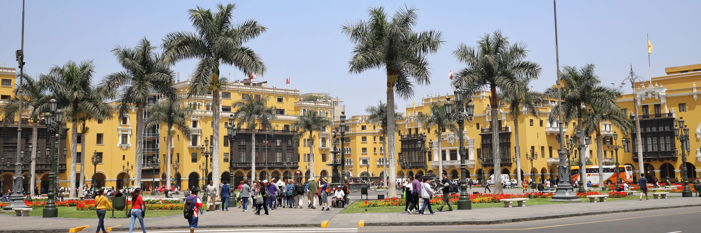
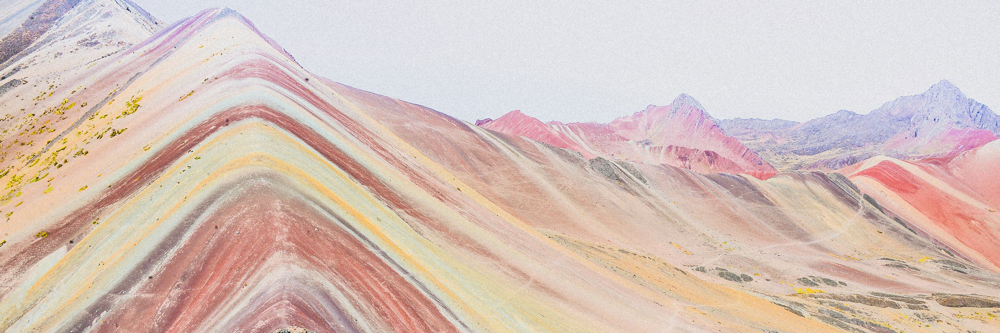
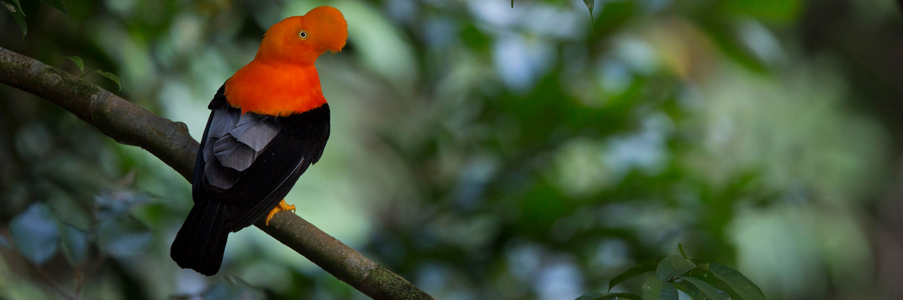
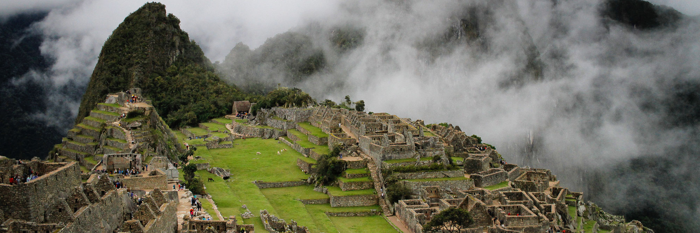

Lima
Founded in 1535 by the Spanish conquistador Francisco Pizarro, the modern city is a curious mix of the modern mega city with some 'islands of modernity', large but orderly slum areas and colonial architecture in the city center. Lima was the seat of the Spanish rule during 300 years, and as such it has wonderful churches, cloisters and monasteries that are worth a visit.
Lima is also the best place to try the wonderful Peruvian cuisine, which has a huge variety of ingredients from coast, mountain and Amazon regions. The cold sea current in front of Peru's large coast makes the sea very rich in fish and seafood, which have a great taste due to the special plankton they eat. Fish and seafood restaurants are therefore worth the time, and not expensive.

Vinicuna
At Vinicuna, alsos known as the Rainbow Mountain, each of the mountain peaks in this area is covered in wide lines of pastel blue, intense red, green, pink and yellow. As for how exactly the lands have this color, there is still no scientific explanation. What is certain though, that the colors remain there all year long, just as they have, ever since the location was discovered.
For those who are in good physical shape and want to have one of the most incredible experiences of their life, visiting the Vinicunca Mountains is a must. Getting to the location takes at least 6 days depending on how fast and for how long one can walk, but as visitors claim – it is absolutely worth it.

The Amazon
The Amazon rainforest, covering much of northwestern Brazil and extending into Colombia, Peru and other South American countries, is the world’s largest tropical rainforest, famed for its biodiversity. It’s crisscrossed by thousands of rivers, including the powerful Amazon.
The Peruvian Amazon contains the most biodiverse areas in the world, with incredible vegetation, birdlife and wildlife. Whether you explore it up close, from the ground or a boat, or fly over it in a plane, the Peruvian jungle seems endless. Well over half of the country is covered by dense tropical rainforest, and this jungle region, sharing the western edge of the Amazon with Colombia, Ecuador and Brazil, forms part of what is probably the most biodiverse region on Earth.

Machu Picchu
Machu Picchu is an Incan citadel set high in the Andes Mountains in Peru, above the Urubamba River valley. Built in the 15th century and later abandoned, it’s renowned for its sophisticated dry-stone walls that fuse huge blocks without the use of mortar, intriguing buildings that play on astronomical alignments and panoramic views. Its exact former use remains a mystery.
This awe-inspiring ancient city was never revealed to the conquering Spaniards and was virtually forgotten until the early part of the 20th century. In the high season, from late May until early September, 2500 people arrive daily. Despite this great tourist influx, the site manages to retain an air of grandeur and mystery, and is a must for all visitors to Peru.
